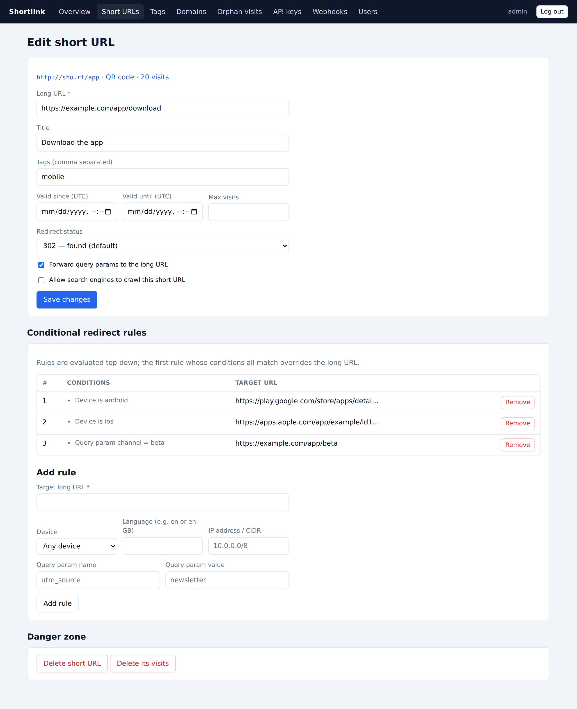

Short URLs
Creating links
Use + New short URL in the dashboard or
POST /rest/v1/short-urls. Options:
- Custom slug — instead of a generated code. Slugs may contain
letters, digits,
-_.~+and slashes (docs/introworks). - Domain — place the link on another registered domain; unknown domains are auto-registered on first use.
- Title — set manually, or leave blank and the page title is fetched automatically in the background.
- Tags — comma separated, for organizing and filtering.
- Redirect status — 301, 302 (default), 307 or 308.
- Forward query params — when on,
?utm_source=…on the short URL is appended to the long URL. - Crawlable — include this link in
robots.txtas allowed for search engines.
Lifetime controls
Every link can carry:
- Valid since / until — outside the window the link behaves like an unknown code.
- Max visits — after the limit is reached the link stops redirecting.
Expired or exhausted links fall through to the invalid-short-URL behavior (a 404 page, or a redirect you configure globally or per domain).
Conditional redirect rules

Rules override the long URL for matching visitors and are evaluated top-down; the first rule whose conditions all match wins. Conditions:
| Condition | Matches when… |
|---|---|
| Device | the visitor is on Android, iOS, any mobile, or desktop |
| Language | the Accept-Language header includes the language
(en matches en-GB; en-US is exact) |
| Query param | the short URL was called with ?key=value |
| IP address | the visitor's IP is in a CIDR range (e.g. 10.0.0.0/8) |
A typical use: send sho.rt/app to the Play Store on Android, the App
Store on iOS, and a landing page elsewhere.
QR codes
Every short URL serves a QR code publicly at:
GET /{code}/qr-code?size=300&format=png|svg&margin=1&errorCorrection=L|M|Q|Hrobots.txt
The instance serves a robots.txt that disallows everything except the
base URL and links marked crawlable.